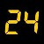

|
 |
Az egyszerûség
kedvéért induljunk ki abból a kijelentésbõl, hogy mindannyian fogyasztók vagyunk. Te is, én is. Oké. Mindkettõnk akkor érzi jól magát, ha van
annyi pénz a zsebünkben, hogy bármikor vehetünk magunknak még egy hatforintos zsemlét a teszkóban.
Hogy kinek mi a maga hatforintos zsemléje, az most lényegtelen. Van, aki egy családi autóban látja a
hatforintos zsemlét, van, aki egy rúd Pick szalámiban, van, aki egy doboz cigiben vagy egy üveg
borban.
Tologatják elénk a népszavazási kezdeményezéseket (milyen szép kifejezés,
megtanultátok?). Itt most végre mindenki dönthet a sorsáról. Nincsen kérem egyéni felelõsség! Amit
megszavaztok, az lesz. Legalábbis jó esetben. Jómagam persze az egész ügyet nem is értem: mi a
fenéért hozzak én döntést például arról, hogy akkor milyen finanszírozásba kerüljön az egészségügy?
Hát nem azért a van a tudós, kutató, szakértõ, jövõkutató meg a többezer évre visszanyúló írott
hagyomány, hogy õk javaslatokat tegyenek, merre haldjunk a jó irányba? Mert nekem aztán végképp
fogalmam sincs arról, hogy hosszú távon jó-e, hogy a benzinkúton is kaphatok fájdalomcsillapítót.
(Megjegyzem, nyilván van, aki tudja.) Pedig nem vagyok egy hülye ember, megmondja ezt akárki. Ha
megvannak az ajánlások a túlélésre, akkor majd lesz mirõl beszélni, akkor esetleg hajlandó vagyok
döntést is hozni, így viszont akár arról is lehetne népszavazási kezdeményezés, hogy legyen-e 2012.
december 23-án tizenöt gyalult sárgarépa a békéscsabai Kossuth Lajos utcában. Lehet, hogy valaki
tudja, miért lenne ez áldásos az emberiség számára. Én nem tudom.
Szerintem a választópolgár
egyéni felelõsségének éreztetése az nem ott kezdõdne, hogy
elétoljuk a témáinkat, aztán válasszon magának szimpatikusabb bohócot. Azzal senki nem fog kiállni,
hogy az egyéni felelõsség a mindennapok legapróbb helyzeteinél kezdõdik. Fogyasztó vagy, te akkor
szavazol, amikor leveszed az óriás túrórudit a polcról, mert ezzel kijelented, hogy egy olyan jövõt
akarsz, amelyben megtalálod majd az óriás túrórudit. De hogy ne csak a konzumidiotizmus mocsarában
tapossunk, akkor is szavazol, amikor Füst Milán, Koszolányi Dezsõ vagy Hamvas Béla köteteit veszed
le a polcról, legyen az a könyvesház, antikvárium vagy akár a család könyvespolca. Akkor is
szavazol, amikor a fejenpörgõs, trendi szórakozóhelyek helyett inkább közösségi teret választasz
kikapcsolódási terepnek. A vidéki mûvházakról már beszélni sem merek, úgyhogy inkább a budapesti
Almássy téri Szabadidõközpontot említem meg. Aki nem tudná, hamarosan bezárják. Helyette ott vannak
a minimális igényszintet (se) kielégítõ romkocsmák és egyebek, amelyekrõl sok mindent elmondhatunk,
csak azt nem, hogy valódi közösségi terek. Nem az a választópolgár kirekesztése a politikából, hogy
nem kérdik meg, egyetértesz-e azzal, hogy egy elvont valami
az önkormányzati finanszírozásban maradjon-e. Hanem az, amikor nem szavazhatsz arra, amire valóban
szeretnél. Mert jó, hogy véleménye mindenkinek van, csak a vélemény az olyan, amit nagyon könnyen
lehet befolyásolni. A tett, a tettek bizony gyakran nem a véleményünkbõl következnek. Én például
mindig is azt hittem magamról, hogy az életben nem tenném be a lábam egy népzenei táncházba, és
pakk, éppen az említett Almássy téri Szabadidõközpontban mégis megtörtént a csoda. Nézzünk már
magunkba, hát hol van ehhez képest az összenyelvészkedett népszavazási mizéria? Én arra szavaznék,
hogy legyen Almássy tér. Egyszerûen nem is kérdés, és nem is lesz.
De ugyanilyen szavazás az
is, amikor az újságos bódé elõtt állva az újságokat, napilapokat nézegetem. Népszabadság, Népszava,
Magyar Hírlap és Magyar Nemzet jól megférnek egymás mellett. Aki igazán tájékozott és objektív akar
lenni, legalább kettõt megvásárol ezekbõl. Egy frászt! Vettem egy Élet és Tudományt, egy National
Geographicot, és dacból egy Új Embert. Rubicont csak azért nem, mert még az elõzõ szám volt csak
kinn, az pedig épp nem érdekel. Szavaztam. Az Élet és Tudományban az '56-os forradalomról van cikk,
Szeged békés forradalmáról. Az egyik képen egy kapualjat látunk, fölötte hatalmas transzparensen:
ANYU NE FÉLJ, NEM LESZ SEMMI BAJOM! Az új ember címlapján a következõ címmel közöl írást: Erõsödik a hitünk, ha továbbadjuk. A National Geographic pedig a
bioetanol nevû új, környezetbarátnak kikiáltott üzemanyagról hoz írást, ami éppen egy olyan téma,
amivel mostanában sokat foglalkozom. Ezek voltak ma az én hatforintos teszkó zsemléim, erre
szavaztam, ez már az enyém. Az én egyéni felelõsségem abban van, hogy tudatosan választom-e ki
azokat az elemeket, amelyekkel be szeretném rendezni a közös jövõt.
Összeszorul a szívem,
amikor a Természetbúvár magazint nyitom ki. Lassan azt mondhatom, tíz éve már, hogy elõször
olvastam, mennyire szüksége van a lapnak az elõfizetõkre, egy százalékokra, mecénásokra, mert kevés
a pénz. És ma azt olvasom náluk, hogy éppencsak elhárultak a legyõzhetetlennek hitt akadályok, és
végül mégis kiírták erre az évre is a tanulmányi versenyeket. Hát miért, nem természetes, hogy az
általános és középiskolások részt vehetnek a Kitaibel Pál, Kaán Károly, Teleki Pál és Hermann Ottó
versenyeken? Vagy nem számít már a környezeti nevelés? Én mindegyik versenyen ott voltam
kisiskolásként. Mikor szavazunk majd arról, szeretnénk-e, hogy gyermekeink valóban tudatos, okos,
tisztalelkû, õszinte lakói legyenek a közös jövõnek? Mert szerintem a felelõs ember minden nap
tanúságot kell, hogy tegyen egy ilyen jövõ vágya mellett. Helyette azonban más értékeket
közvetítenek nekünk. Meggyõzést, szócsavarást, ígérgetést és bizonytalanságot. Jövõtlenséget. Te
mire szavazol?
| | vissza a fõoldalra |  |
| 1 2 3 4 | |  | | | | | | | | | | | | | | | | | | | | 

|
| | 1 2 3 4 |  |
|


túraszervezõ
túra-rss
mi ez?

legjobbak
legolvasottabbak
tartalomjegyzék
rss feed

AboryM
Caesar
Count Grishnackh
cscsabi
eürdüngh
Feki
GyalogKakukk
Ishukone
Kadzseszka
LACI1993
Mini
Muska
Rommel
Segi
Takezó
tommylee
vikcee
|